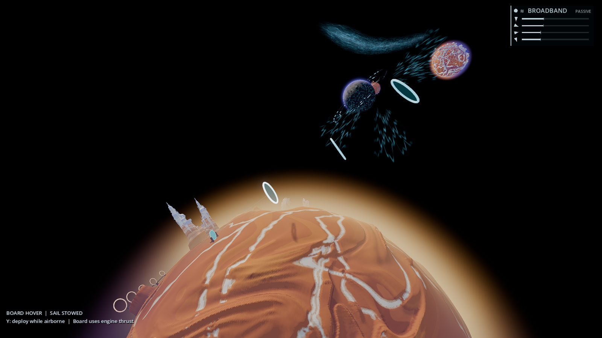
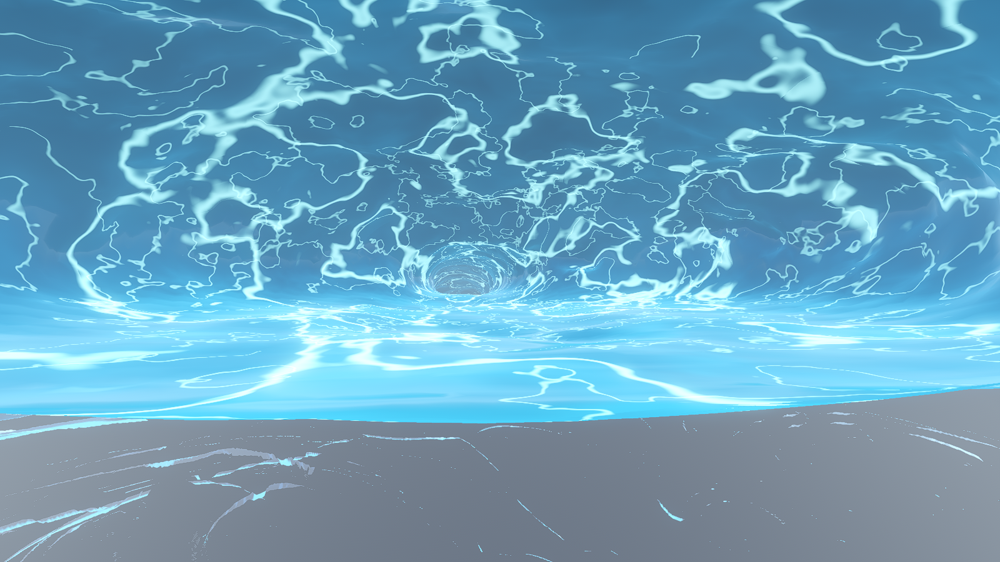

UPLOAD COMPUTER / SERVER LOG
Back to the logupdate
Routes between worlds
Relay traffic between the ten planets increased. Space travel, escape launches, the ice planet and the scanner were all reworked, and frame time improved.

Transit log. Ten worlds online; the space between them is no longer empty.
- Space travel: speed now fades gently in open space instead of braking hard. Solar-wind lanes carry the board at about 200 m/s, and the sail deploys on its own inside them.
- Escape rings: each launch site has a chain of three rings, the last one in orbit. Fly the whole chain cleanly and it counts as a portal launch.
- Nebulae: fly-through nebulae and a lightning asteroid field give speed something to pass.
- blue_ice: the crevasses are wide enough to ride inside. Procedural caverns run beneath the surface: 11 chambers and 4.8 km of tunnels.
- Scanner: the signal needles now read as a faint heat shimmer, and each ping is followed by a brief buzz showing which way signals lie.
- Performance: about 8 fps before, 52–70 fps now.
Pilot verification pending.

